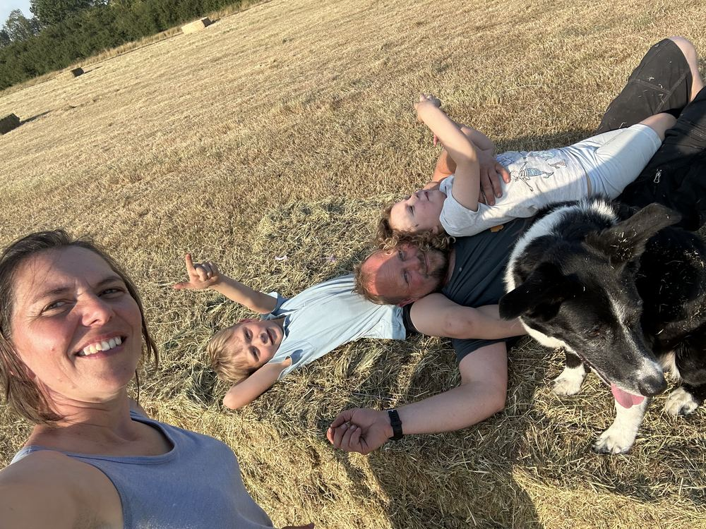

Our story
A decade of looking after the ground
I started The Little Dairy in 2017 because I wanted to try a different approach to dairy farming, one where the calves stay with their mothers and the cows share their milk with us.
It is my own independent business, run from the land I have been regenerating for the past decade with holistic and organic principles, one patient season at a time.
Over those years the soil has darkened, the hedges have thickened and the wildlife has come back. The cows are part of that work. Their grazing feeds the soil, and the soil feeds them.
I'm Casha. I look after the herd, walk the fields with visitors, and write about what the land is teaching me.

Care for the soil and everything else is taken care of. Casha Bowles-Jones